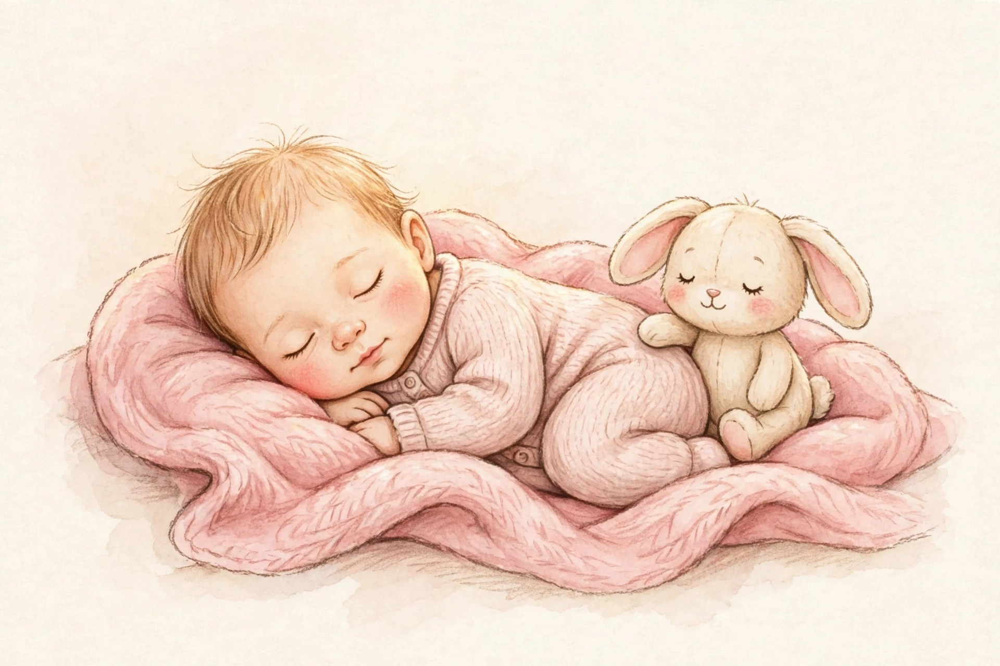

Birthday Boy Photo Prompts: 10 Fun Ideas for 2026

Want a prompt made just for your photo? Build your own prompt for this photo with the free Prompt Builder, it takes about a minute.

Start with Prompt 9, jumping with joy. I tried it with a photo of my nephew in his blue shirt and the jump did something no posed prompt could. His grin looked like his actual grin, the one he gets when he scores a goal.
His birthday photo ends up on the fridge for a year, so I wanted this set to feel like him, not like a catalogue. My nephew is loud, fast, and allergic to standing still. The prompts that worked best were the ones that let him move.
My first attempt was a flop. I used a photo taken in a dim hallway, and the cake came out looking like a prop from a different party. I retook the starting photo by the window in the morning, same shirt, same kid, and suddenly the balloons and candles sat in the scene like they belonged there.
Some of these are calm, like holding a gift box. Some are noisy, like the confetti close up or the jump. I kept both kinds in, because a boy can be both on the same day, sometimes in the same hour.
Pick the one that matches his mood on the day. If he is bouncing off the walls, do not force the smart outfit portrait. Give him the jumping one and let the photo keep up with him.
Before you start
A minute of setup here saves you from the weird results I got on my first run.
- Use a clear photo of him in daylight, face in focus, looking at the camera. Dim light is what made my first cake photo fall apart.
- Keep the background plain in the starting photo. A cluttered room turns into a cluttered party.
- Copy the prompt exactly on the first try, then change one small thing at a time.
- Let him pick if he is old enough. My nephew chose the jumping prompt before I had finished reading the list.
- Only use a photo you have permission to use, and ask a parent or guardian first if he is not your child.
Table of contents
- Prompt 1: With a birthday cake and candles
- Prompt 2: In a party hat with balloons
- Prompt 3: Blowing out candles
- Prompt 4: With friends at a party
- Prompt 5: Holding a gift box
- Prompt 6: Outdoor birthday in a park
- Prompt 7: Close up with confetti
- Prompt 8: In a smart outfit, cake behind
- Prompt 9: Jumping with joy
- Prompt 10: With a number balloon
- Bonus 1: Holding his football at the party
- Bonus 2: Making a silly face with cake
- Bonus 3: Waving from a pile of presents
- How to use these prompts
- Tips to get a better result
- Common mistakes to avoid
- Frequently asked questions
10 copy and paste prompts
Scroll through, find the scene that sounds like him today, and paste it under his photo. One try will tell you a lot.
1. With a birthday cake and candles
Create a realistic, natural photo from my uploaded photo. Keep the face exactly the same as in the uploaded photo, with the same eyes, smile, hair and skin tone. Do not change the person into someone else, and do not make the skin look smooth or plastic. Show you smiling behind a birthday cake with candles, with balloons in the background and warm indoor light. Keep the pose relaxed and natural, with a real expression, not a stiff studio pose. Use soft, natural light that suits the scene, with clear detail in the face, hair and clothes. Keep the background simple so the person stays the main focus. Shoot it in a vertical 3 to 4 frame, as if taken on a 35mm lens with a shallow depth of field. The final photo should look like a real photo taken on a good day, with true colours, gentle shadows and a calm, honest feel. It should work well for a profile photo, a print, or a post with family and friends.
The cake and candles mark the day straight away, and the warm light suits his face. He stays in front, so nothing hides his smile.
2. In a party hat with balloons
Create a realistic, natural photo from my uploaded photo. Keep the face exactly the same as in the uploaded photo, with the same eyes, smile, hair and skin tone. Do not change the person into someone else, and do not make the skin look smooth or plastic. Show you in a party hat with colourful balloons behind you, smiling, with bright indoor light. Keep the pose relaxed and natural, with a real expression, not a stiff studio pose. Use soft, natural light that suits the scene, with clear detail in the face, hair and clothes. Keep the background simple so the person stays the main focus. Shoot it in a vertical 3 to 4 frame, as if taken on a 50mm lens with a shallow depth of field. The final photo should look like a real photo taken on a good day, with true colours, gentle shadows and a calm, honest feel. It should work well for a profile photo, a print, or a post with family and friends.
A party hat and balloons are the classic birthday look for a boy, and they are hard to get wrong. The hat adds a bit of fun without covering his face.
3. Blowing out candles
Create a realistic, natural photo from my uploaded photo. Keep the face exactly the same as in the uploaded photo, with the same eyes, smile, hair and skin tone. Do not change the person into someone else, and do not make the skin look smooth or plastic. Show you blowing out birthday candles, with a soft smile, cake in front, and warm light. Keep the pose relaxed and natural, with a real expression, not a stiff studio pose. Use soft, natural light that suits the scene, with clear detail in the face, hair and clothes. Keep the background simple so the person stays the main focus. Shoot it in a vertical 3 to 4 frame, as if taken on a 85mm portrait lens with a shallow depth of field. The final photo should look like a real photo taken on a good day, with true colours, gentle shadows and a calm, honest feel. It should work well for a profile photo, a print, or a post with family and friends.
Blowing out the candles is the photo every parent wants. The candlelight warms his face, and he is doing something real, not holding a pose.
4. With friends at a party
Create a realistic, natural photo from my uploaded photo. Keep the face exactly the same as in the uploaded photo, with the same eyes, smile, hair and skin tone. Do not change the person into someone else, and do not make the skin look smooth or plastic. Show you with friends at a small birthday party, laughing, with balloons and a cake on the table. Keep the pose relaxed and natural, with a real expression, not a stiff studio pose. Use soft, natural light that suits the scene, with clear detail in the face, hair and clothes. Keep the background simple so the person stays the main focus. Shoot it in a vertical 3 to 4 frame, as if taken on a 35mm lens with a shallow depth of field. The final photo should look like a real photo taken on a good day, with true colours, gentle shadows and a calm, honest feel. It should work well for a profile photo, a print, or a post with family and friends.
Friends beside him change the whole mood. He relaxes, he laughs, and the photo feels like his party. He stays in the middle, so the picture is still his.
5. Holding a gift box
Create a realistic, natural photo from my uploaded photo. Keep the face exactly the same as in the uploaded photo, with the same eyes, smile, hair and skin tone. Do not change the person into someone else, and do not make the skin look smooth or plastic. Show you holding a wrapped gift box, smiling, with balloons in the background. Keep the pose relaxed and natural, with a real expression, not a stiff studio pose. Use soft, natural light that suits the scene, with clear detail in the face, hair and clothes. Keep the background simple so the person stays the main focus. Shoot it in a vertical 3 to 4 frame, as if taken on a 50mm lens with a shallow depth of field. The final photo should look like a real photo taken on a good day, with true colours, gentle shadows and a calm, honest feel. It should work well for a profile photo, a print, or a post with family and friends.
A gift box gives him something to hold, which fixes the stiff arms I kept seeing in my early tries. The excitement does the rest.
6. Outdoor birthday in a park
Create a realistic, natural photo from my uploaded photo. Keep the face exactly the same as in the uploaded photo, with the same eyes, smile, hair and skin tone. Do not change the person into someone else, and do not make the skin look smooth or plastic. Show you at an outdoor birthday in a park, with a picnic table, balloons, and soft daylight. Keep the pose relaxed and natural, with a real expression, not a stiff studio pose. Use soft, natural light that suits the scene, with clear detail in the face, hair and clothes. Keep the background simple so the person stays the main focus. Shoot it in a vertical 3 to 4 frame, as if taken on a 85mm portrait lens with a shallow depth of field. The final photo should look like a real photo taken on a good day, with true colours, gentle shadows and a calm, honest feel. It should work well for a profile photo, a print, or a post with family and friends.
A park party is bright and open, and the green behind him keeps the picture fresh. It suits a boy who would rather be outside than in a studio.
7. Close up with confetti
Create a realistic, natural photo from my uploaded photo. Keep the face exactly the same as in the uploaded photo, with the same eyes, smile, hair and skin tone. Do not change the person into someone else, and do not make the skin look smooth or plastic. Show you in a close up photo with soft confetti in the air, smiling, with a plain bright background. Keep the pose relaxed and natural, with a real expression, not a stiff studio pose. Use soft, natural light that suits the scene, with clear detail in the face, hair and clothes. Keep the background simple so the person stays the main focus. Shoot it in a vertical 3 to 4 frame, as if taken on a 35mm lens with a shallow depth of field. The final photo should look like a real photo taken on a good day, with true colours, gentle shadows and a calm, honest feel. It should work well for a profile photo, a print, or a post with family and friends.
Confetti around a close crop is joyful and loud, and his expression stays the focus. The confetti stays at the edges, not across his face, which matters.
8. In a smart outfit, cake behind
Create a realistic, natural photo from my uploaded photo. Keep the face exactly the same as in the uploaded photo, with the same eyes, smile, hair and skin tone. Do not change the person into someone else, and do not make the skin look smooth or plastic. Show you in a smart outfit standing by a birthday cake, smiling at the camera, with warm light. Keep the pose relaxed and natural, with a real expression, not a stiff studio pose. Use soft, natural light that suits the scene, with clear detail in the face, hair and clothes. Keep the background simple so the person stays the main focus. Shoot it in a vertical 3 to 4 frame, as if taken on a 50mm lens with a shallow depth of field. The final photo should look like a real photo taken on a good day, with true colours, gentle shadows and a calm, honest feel. It should work well for a profile photo, a print, or a post with family and friends.
A smart outfit with the cake behind him is the calm portrait of the set. I use it for prints and for the grandparents, because it is tidy and easy to like.
9. Jumping with joy
Create a realistic, natural photo from my uploaded photo. Keep the face exactly the same as in the uploaded photo, with the same eyes, smile, hair and skin tone. Do not change the person into someone else, and do not make the skin look smooth or plastic. Show you jumping with joy at a birthday party, smiling, with balloons and bright light. Keep the pose relaxed and natural, with a real expression, not a stiff studio pose. Use soft, natural light that suits the scene, with clear detail in the face, hair and clothes. Keep the background simple so the person stays the main focus. Shoot it in a vertical 3 to 4 frame, as if taken on a 85mm portrait lens with a shallow depth of field. The final photo should look like a real photo taken on a good day, with true colours, gentle shadows and a calm, honest feel. It should work well for a profile photo, a print, or a post with family and friends.
Jumping is the one that finally looked like my nephew. The movement catches a real laugh, and the photo feels alive instead of posed. Try this one if the others look stiff.
10. With a number balloon
Create a realistic, natural photo from my uploaded photo. Keep the face exactly the same as in the uploaded photo, with the same eyes, smile, hair and skin tone. Do not change the person into someone else, and do not make the skin look smooth or plastic. Show you holding a large number balloon, smiling, with a plain bright background. Keep the pose relaxed and natural, with a real expression, not a stiff studio pose. Use soft, natural light that suits the scene, with clear detail in the face, hair and clothes. Keep the background simple so the person stays the main focus. Shoot it in a vertical 3 to 4 frame, as if taken on a 50mm lens with a shallow depth of field. The final photo should look like a real photo taken on a good day, with true colours, gentle shadows and a calm, honest feel. It should work well for a profile photo, a print, or a post with family and friends.
The number balloon tells you his age at a glance, years later. It is a simple prop that turns a nice photo into a birthday keepsake.
3 bonus prompts I wrote for this guide
I added these three after the first ten, because my nephew asked why there was no photo with his football and no photo where he is actually being silly. Fair point. Here they are.
Bonus 1: Holding his football at the party
Create a realistic, natural photo from my uploaded photo. Keep the face exactly the same as in the uploaded photo, with the same eyes, smile, hair and skin tone. Do not change the person into someone else, and do not make the skin look smooth or plastic. Show you as a young boy grinning and holding a football under one arm, birthday balloons behind you, warm indoor light. Keep the pose relaxed and natural, with a real expression, not a stiff studio pose. Use soft, natural light that suits the scene, with clear detail in the face, hair and clothes. Keep the background simple so the person stays the main focus. Shoot it in a vertical 3 to 4 frame, as if taken on a 50mm lens with a shallow depth of field. The final photo should look like a real photo taken on a good day, with true colours, gentle shadows and a calm, honest feel. It should work well for a profile photo, a print, or a post with family and friends.
The football is his, so he holds it like it is his. That one familiar thing makes the whole party scene feel like his party.
Bonus 2: Making a silly face with cake
Create a realistic, natural photo from my uploaded photo. Keep the face exactly the same as in the uploaded photo, with the same eyes, smile, hair and skin tone. Do not change the person into someone else, and do not make the skin look smooth or plastic. Show you as a young boy pulling a silly face with your tongue out, a birthday cake with candles on the table in front of you, balloons in the background. Keep the pose relaxed and natural, with a real expression, not a stiff studio pose. Use soft, natural light that suits the scene, with clear detail in the face, hair and clothes. Keep the background simple so the person stays the main focus. Shoot it in a vertical 3 to 4 frame, as if taken on a 35mm lens with a shallow depth of field. The final photo should look like a real photo taken on a good day, with true colours, gentle shadows and a calm, honest feel. It should work well for a profile photo, a print, or a post with family and friends.
A silly face is the photo he will actually laugh at in a year. It works because it is him being him, not him posing.
Bonus 3: Waving from a pile of presents
Create a realistic, natural photo from my uploaded photo. Keep the face exactly the same as in the uploaded photo, with the same eyes, smile, hair and skin tone. Do not change the person into someone else, and do not make the skin look smooth or plastic. Show you as a young boy sitting in the middle of a pile of wrapped presents, waving at the camera, in warm morning light. Keep the pose relaxed and natural, with a real expression, not a stiff studio pose. Use soft, natural light that suits the scene, with clear detail in the face, hair and clothes. Keep the background simple so the person stays the main focus. Shoot it in a vertical 3 to 4 frame, as if taken on a 85mm portrait lens with a shallow depth of field. The final photo should look like a real photo taken on a good day, with true colours, gentle shadows and a calm, honest feel. It should work well for a profile photo, a print, or a post with family and friends.
Sitting in the presents gives him something to do and somewhere to be. The wave is natural, and the photo feels like Christmas morning, but for a birthday.
How to use these prompts
How to use a prompt in Google Gemini
- Open Gemini on your phone or computer.
- Upload a clear photo of him, taken in daylight.
- Copy one prompt from this page and paste it under the photo.
- Send it and wait.
- Check the face and the candles first, then save the picture you like.
How to use a prompt in ChatGPT
- Open ChatGPT on your phone or computer.
- Upload his photo in the chat.
- Copy one prompt from this page and paste it with the photo.
- Send it and wait for the result.
- If the cake or the balloons look wrong, ask for one small change only.
If the first picture looks stiff, do not blame the photo. Try the jumping prompt or the confetti one with the same starting photo. Movement loosened up my nephew's smile more than any wording change I tried.
Tips to get a better result
- Use a photo where he is already happy. A real grin is hard to fake, and it shows in the result.
- Keep his outfit simple in the starting photo. A loud pattern confused the tool in my first try and the shirt came back wrong.
- Start with the cake prompts. They are the most reliable for a birthday picture, in my tests at least.
- Check the candles, the hands and the collar in the result. Those are the spots where small errors show up.
- Ask for a vertical photo for a card or a phone screen. A wide crop loses the balloons.
- Save the prompt that worked. The same style will suit next year's photo too, and the pair will look good together.
Common mistakes to avoid
- Do not start with a dark or blurry photo. The tool will guess at the face, and the guess will not look like him.
- Do not use a photo of a child without a parent or guardian saying it is fine.
- Do not rewrite the whole prompt at once. Change one thing, such as the balloons, and see what happens.
- Do not expect the same picture twice. I ran the same prompt three times and got three different results. Keep the best.
- Do not add too many props at once. A cake, some balloons and a smile are enough. I added a banner and streamers once and the photo fell apart.
Frequently asked questions
Can I use these prompts for free?
Yes, all 10 prompts are free, plus the 3 bonus ones further down the page. Copy one, paste it into Gemini or ChatGPT with his photo, and use the picture for a card, a post, or a print.
Which tool works best with these prompts?
Both work well, and I use both. Gemini kept my nephew's face closer on the jumping prompt, while ChatGPT followed the cake scene more closely. Run the same prompt in both and keep the picture you like best.
Why does the face change in my photo?
It is almost always the starting photo. If it is dark, blurry, or taken from the side, the tool has to guess the face. Use a clear front photo in good light and leave the prompt alone on the first try.
Can I change the prompt for my own photo?
Yes. Change the outfit, the cake, or the background to fit your photo. Keep the line about keeping the face the same, and keep the scene simple so the tool has less to get wrong.
Can I use the photo I make for a card or a post?
Yes, for your own personal use, like a card, a post on your own social media, or a print. Only use a photo of a child with a parent or guardian saying it is fine.
Related guides



See all Family and Baby Prompts guides | Back to the home page
Written by Muhammad Afaq Verified Creator
Muhammad Afaq writes the prompts on this site and tries each one on Gemini and ChatGPT with real photos before it goes live. He likes a clear photo, a simple prompt, and a result that still looks like the person in it.